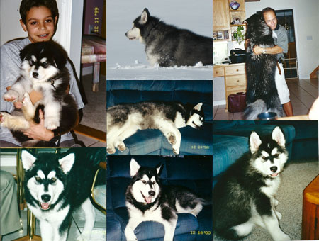

July 2012

Kitty is a 12 year-old Alaskan Malamute. Her registered name is Alaska’s Own Kitty Claus. My son thought it would be humorous to have a large dog named Kitty and call her “here kitty kitty”. Needless to say, we have gotten looks from people when Kitty has escaped (a favorite past-time) and we have gone driving around looking for her calling “Kitty!” Her mother was pure white and from Alaska. Her father had similar coloring to Kitty. There were six puppies in the litter. Kitty went to obedience school as a puppy. We all learned very quickly that Kitty was very bright but determined to do as she likes. She also took on certain feline characteristics in light of her name such as curving her back when she stretches. She also likes fish. Kitty is an indoor dog, but loves the outside. Whether warm or cold, she could spend the entire day lying outside looking around her. She loves to chase animals. She loves little dogs, but ignores most of the larger dogs in our neighborhood. As we walk around the neighborhood, which we do two or three times each day, every dog, whether inside or outside starts to bark at her. She just walks and totally ignores their noise. When she doesn’t want to walk, she has been known to lie down and refuse to move. She will not play fetch or tug-of-war. Her primary form of play is to chase one another or to wrestle. She will chase any leather ball (not plastic mind you), but will not return it. Kitty is getting older, but she doesn’t recognize this. She can still run and climb with the best of them. She is thought of as a prima donna by all who know her. A perfect example is that when we have company sitting in our family room, she has been knows to use her paws to push everything off the coffee table and then gracefully climb onto the table so as to be the center of attention. This is an act only performed when there is company. But that’s just out Kitty.
|